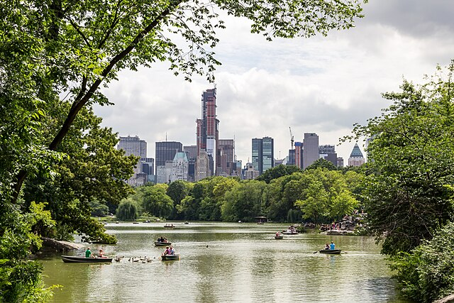
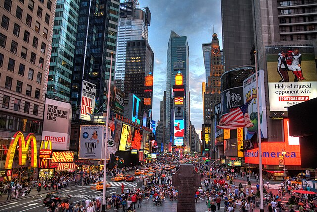
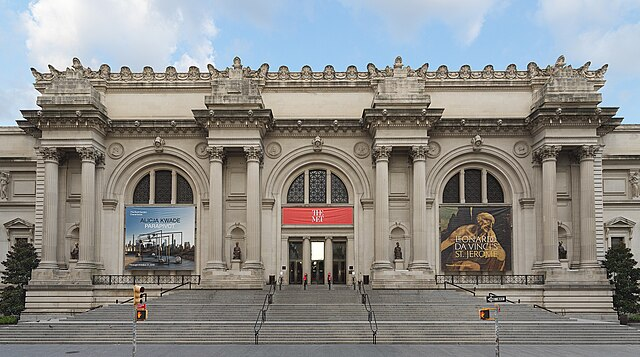

Popular Attractions
Statue of Liberty

The Statue of Liberty is a well known symbol of freedom and democracy in the United States. Built in 1884 and arriving in New York from France in 1885 it is located on Liberty Island which is in New York harbor. People can take a ferry from Manhattan or even New Jersey to reach the island. You can explore the statue up close and even visit the museum on the island to learn more about its history and meaning.
Learn more at the official National Park Service page.
Central Park

Central Park is a large public park that is located in the heart of Manhattan, New York City. It has a bunch of different walking paths, lakes, and open spaces where you can relax or exercise. The park is also famous for hosting many cultural events, concerts, and art shows throughout the year. Central park is known by many as a popular place for both locals and tourists.
Visit the official Central Park website for details.
Times Square

Time Square is probably one of the more known and famous areas in New York City. Its bright colorful lights and huge electronic billboards definitely make it stand out compared to other parts of the city. It is home to many broadway theatres where a lot of popular shows and musicals are performed. The area is always busy and full of people which is part of the reason it is an exciting place to visit for many tourists and locals. When I saw it in person for the first time it did not feel real.
More info at the Times Square official site.
The Metropolitan Museum of Art

The Metropolitan Museum of Art is known as one of the largest and most famous art museums in the entire world. Located on the eastern edge of Central Park in Manhattan it has a huge collection of art that covers over thousands of years of ancient artifacts, paintings, sculptures, and modern works. People who visit can explore so many different types of cultures and time periods all in one place. I didnt get the chance to go but its just another thing on my bucket list when I find myself back in New York City.
Explore their collections at the official Met Museum website.